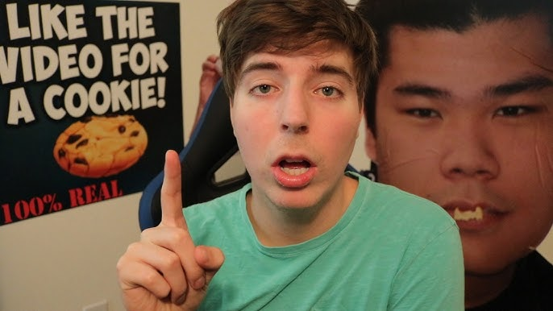

Jimmy Donaldson

MrBeast, whose real name is Jimmy Donaldson, began his journey on YouTube in 2012 as a teenager, initially posting gaming
videos and experimenting with different content styles. He gained early attention for his viral “counting to 100,000” video,
which showcased his willingness to push boundaries for entertainment. Over time, his channel evolved
into large-scale challenge and philanthropy content, often involving huge cash giveaways, elaborate stunts,
and charitable initiatives. MrBeast is widely credited with pioneering a new style of high-budget YouTube production, reinvesting
most of his earnings back into his videos to make them bigger and more engaging. In recent years, he has expanded beyond YouTube into
business ventures and global charity work, becoming one of the platform’s most influential and successful creators.